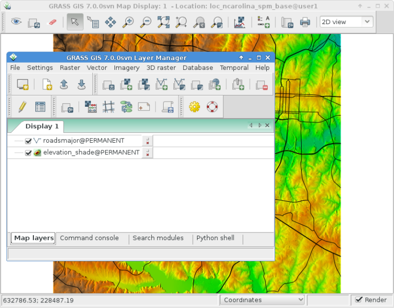
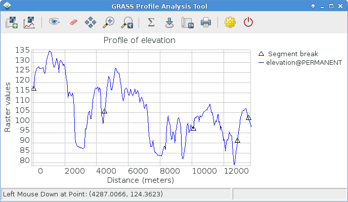
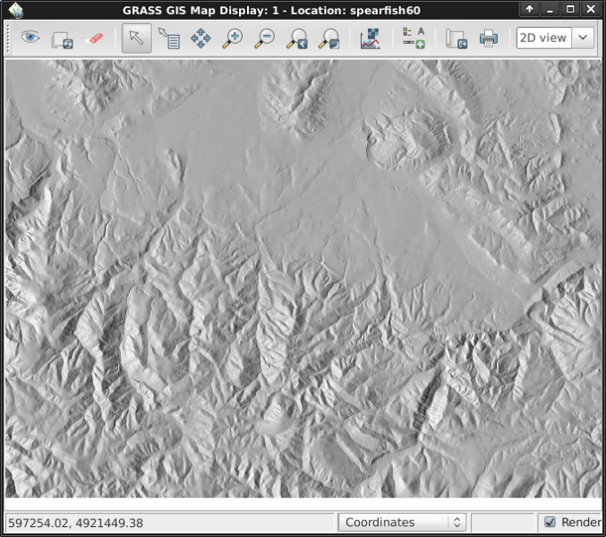
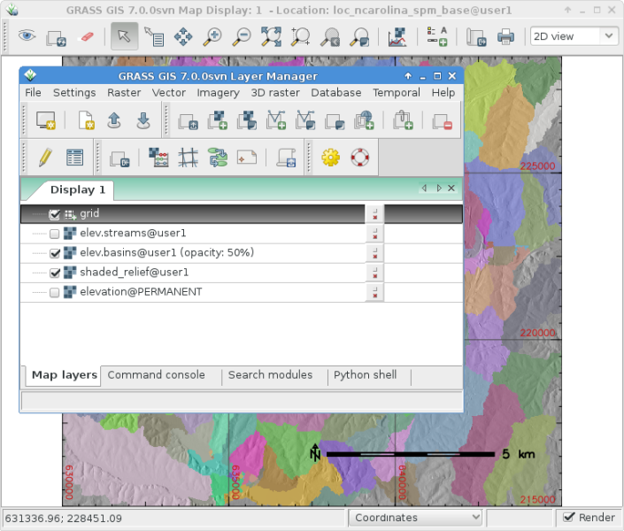
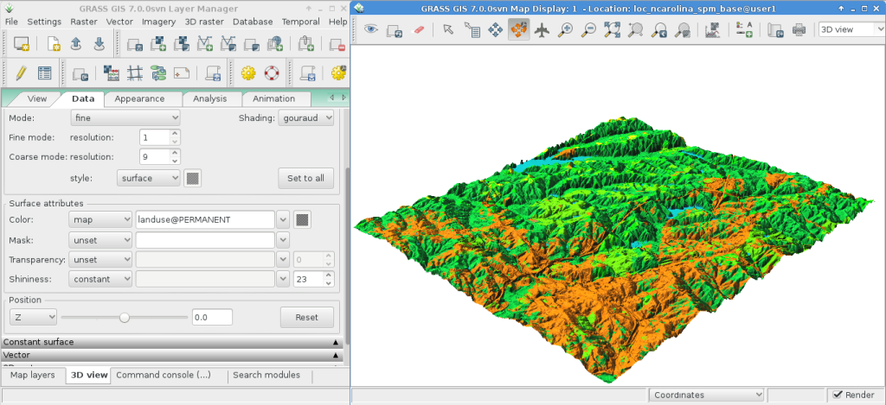

GRASS GIS Quickstart¶
GRASS GIS is a powerful GIS which lets you visualize, manage, analyse and edit geospatial data.
Start GRASS¶
Click on the GRASS link in the menu.
From the ”Welcome to GRASS GIS” window, select the ”nc_basic_spm_grass7” dataset for the location, and ”user1” for the mapset
Click on Start GRASS session.
{kind=link}
This will launch GRASS into the graphical user interface (written in wxPython).
Vihje
If you are on a netbook with a very small display (800x600 resolution) the startup screen might get a little scrunched and the [Start GRASS] button hidden behind the location and mapset lists. If this happens to you the solution is to drag the corner of the window to make it a little bigger. You might have to move the window up past the top of the screen a bit to get the room (hold down the Alt key and left-click drag the window to move it).
Display a map¶
{kind=link}
Once inside, select for display the raster map layer ”elevation” from the PERMANENT mapset.
Go into the GIS Layer Manager window.
Click on the checkerboard toolbar button with a ”+” on it.
Select the map name you want from the ”map to be displayed” pull-down list, and click Ok.
Click on the toolbar button with a ”+” and a bent poly-line which looks a bit like a ”V”.
Select the ”roadsmajor” vector layer from the PERMANENT mapset, and click Ok.
If you need to, right click on the raster map layer and choose ”Zoom to selected map(s)”.
You should now see the maps displayed.
Plot an elevation profile¶
{kind=link}
Back in the GIS Layer Manager window click on the elevation raster map name to select it. Then in the Map Display window, to the right of the zooming buttons on the Map Display toolbar is an icon with a line graph and checkerboard on it. Click on that and select Profile surface map. The @PERMANENT mapset is automatically searched. If the map isn’t automatically listed, again pick the elevation map as the raster layer and press Ok. In the GRASS Profile Analysis Tool window select the second button from the left, it allows you to set out the profile line, click it then mark out a few points on the Map Display canvas. When done go back to the Profile window. Click on the I/O button of the far right to close the profile window.
Adjust raster map colors¶
Now you’ll see your new raster map added to the layer list along with the elevation raster map, except this time it will be in your ”user1” working mapset. You might un-tick the elevation layer’s visibility check-box now so that the two raster layers don’t draw over the top of each other. Click on the checkbox to view your new map if it doesn’t render automatically. The colors might not be as you’d like so let’s change them. With the fractal DEM selected in the layer list, right click on the this raster map layer name and choose ”Set color table”. As an alternative, you can manage color tables in the Raster menu select . In the ’Define’ tab click on the pull-down list for the ”Name of color table” option, and pick one from the list. ”terrain” or ”srtm” are nice choices. Once done click the [Run] button and close the r.colors dialog window. The colors should then update automatically.
Create a shaded relief map¶
{kind=link}
Next we’ll create a shaded relief map of the elevation layer we saw earlier. Start by verifying that the computational region is set match the raster map of interest, ”elevation” in the PERMANENT mapset. To do this, make sure it is loaded into the layer list of the main GIS Layer Manager window, right click on its name and select ”Set computation region from selected map(s)”. If necessary, click on the ”Layers” tab at the bottom to get back to the layer list.
In the Raster menu select (Terrain analysis is about half way down the Raster menu), and the module control dialog will appear. Select as the input name the ”elevation” @PERMANENT map and as the output map you may specify ”shaded_relief”. Once done click [Run]. Now you should find the new shaded_relief @user1 map added into your layer list. Un-tick the other raster layers to only display the newly created shaded relief raster layer.
Add watersheds and streams¶
Once again select the elevation @PERMANENT map. If you changed the region since the last step, again right click on the layer name and click on from the context menu in order to consider the full map for the watsershed calculation.
Muista
The wxGUI map display’s view and zoom is independent and does not affect processing calculations. Check the computational region at any time with ; this is of fundamental importance to any raster grid operations. Raster maps of differing bounds and resolution will be resampled to the current computational region on-the-fly.
Next, in the Raster menu
choose . This
will open the r.watershed module. Select the elevation layer as your
input map, in the same ’Inputs’ tab set the ”Minimum size of the exterior
watershed basin” threshold to
10000 cells, then in the ’Outputs’ tab enter ”elev.basins” for the ”Name for
basins raster map” basins option and ”elev.streams” for the ”Name for
output stream segments raster map” streams option just below it. Then click [Run].
Back in the GIS Layer Manager window check that those two new raster maps are in the layer list and make sure that the basins map is ticked for display in the box to the left of the layer name. You might untick the streams map for now. Next, right click on the ”elev.basins” raster map layer name and select ”Change opacity level”. Set it to about 50% which will re-render the Map Display. Drag a map layer (such as the earlier created shaded relief map) to lower down in the layer list if you wish for it to be drawn behind the watershed basins map layer, and make sure to tick its visibility box to view it as a backdrop.
{kind=link}
In the GIS Layer Manager window click on the Add various overlays button and Add grid layer. For size of grid put 5000 (in map units, here meter). Once done press OK. Optionally you may change the colors for the grid lines and the text labels.
To add a scalebar go to the Map Display window and press the ”Add map elements” button to the right of where you selected the Profile tool earlier and select ”Show/hide scalebar” then click Ok. A scalebar will appear in the top left of the map canvas. Drag it down to the bottom right.
Now you may be thinking to yourself that these fonts are a bit bare. That’s easily fixed in the GIS Layer Manager menus open and in the Map Display tab click the [Set font] button, choose one (for example DajVu Sans Bold), and then [Save] or [Save for this session only] in the Preferences window. You will have to do a full re-render to see the change so click on the re-render button the first in the Map Display window. The fonts will now be much prettier.
Work with vector modules¶
The above tasks have only covered a few raster modules. Don’t let this give you the idea that GRASS GIS is just for raster maps – the vector engine and modules are every bit as full-featured as the raster ones. GRASS GIS maintains a fully topological vector engine which allows all sorts of very powerful analyses.

Continuing with the watershed basins created above, next we’ll convert
them into vector polygons. In the Raster menu select .
In the r.to.vect dialog that opens make sure that elev.basins @user1 is
selected for the input map, give a name for the output map like basins_areas
(vector map names must be SQL compliant, hence not all characters are allowed),
and change ”Output feature type” to area. In the Attributes tab tick
the box to use raster values as category numbers (i.e., the IDs),
since these will match the values in our stream segment raster map created
earlier. Then click on [Run]. Once the new vector map is displayed, you
might right click on it in the Layer Manager list and change its opacity
level to 50%.
Adjust vector map colors¶
As we did earlier with a raster map we will change the color table of the
new watershed basins vector map. With the basins_areas selected in the
layer list, right click on the this vector map layer name and choose
”Set color table”. In the ’Define’ tab click on the pull-down list for the
”Name of color table” option, and pick for example ”bcyr” (blue-cyan-yellow-red)
from the list. Once done click the [Run] button and close the v.colors
dialog window. You may need to re-draw the map to see the colorized vector
map.

Manage attributes¶
Next we’ll add some attributes to those new areas, containing the average
elevation in each basin. In the Vector menu select .
Use basin_areas as the vector polygon map, and select the elevation
raster map to calculate the statistics from; set the the ”Column prefix for
new attribute columns” to elev, and click [Run]; then close the dialog when
it is finished. You can query the values in the Map Display window using
the fourth icon from the left and after verifying that the vector-areas map
is selected in the Layer List, clicking on a vector area in the map canvas.
You can now re-colorize the areas based on the average elevation values using the
v.colors module. In the Vector menu select .
Select basin_areas for the input vector map, as ”Source value” select
attr instead of cat. Then, in the ”Define” tab choose the elev_average
attribute column for the column containing the numeric range. The colors we
want to copy from the elevation raster map, so we select it as the name for
”Raster map from which to copy color table”. After clicking [Run] you
need to refresh the map display (first icon from left) to see the updated
basins map.
Now let’s look at the attribute table and SQL builder in more detail. In the
Layer Manager click the table icon (”Show attribute data for selected vector
map”), it is second from the left on the bottom row. This will open a view
of the database table attached to the selected vector map. For now we’ll just
do a Simple database query to find watershed basins without a lot of variation
in them. Where it says SELECT * FROM basin_areas WHERE pick elev_stddev
from the pull down list for the standard deviation statistic, then select <
from the relation list and in the text box to its right enter < 50 and
click [Apply]. You’ll notice the
number of loaded records in the information bar along the bottom of the window
has shrunk, and that all of the rows with large values for standard deviation
(std. dev.) are now gone from the displayed table. Right-click on the table data
and choose Select all. Again right-click on the table data and this time
choose Highlight selected features. You should see e.g. alluvial flood basins
and mesas show up in the Map Display.
View a 3D visualization¶
{kind=link}
In order to start the 3D visualization suite, select the elevation map as the raster elevation in the Layer list and additionally highlight the entry, then select in the Map Display window the ”3D view” (at the right end of the toolbar). Once the 3D display interface loads, you will see several tabs for the display control of the 3D view. Next select the ”Data” tab and set the fine resolution to ”1” (the lower the value, the finer the resolution), then move the positioning puck and height slider on the ”View” tab around to get different views.
To drape maps, satellite or aerial imagery over the top of the DEM, in the ”Data” tab select as name for the Surface Attributes map the overlay image ”landuse” in the PERMANENT mapset is a good choice. The new view is rendered immediately. Since the area is relatively flat, you can go back to the ”View” tab and increase the Z exaggeration (”z-Exag”).
For easy navigation in the 3D view, switch on the ”Rotate 3D scene” in the map display toolbar, then use the mouse to move the view around.
Things to try¶
While not covered here, you may like to experiment with the Cartographic Composer and object-oriented Graphical Modelling Tool (offers export to Python). You’ll find icons to launch them on the lower row of icons in the Layer Manager window. Further details can be found in the wxGUI help pages.
API¶
The wxGUI is written in Python, and if you’re a fan of Python programming
there are a number of great tools and an API available to you. In the bottom
of the Layer Manager window click on the Python shell tab and
type help(grass.core) to see a listing of the many functions available
in the core GIS python library. Besides the core GIS functions there is
also array (NumPy), db (database), raster, and vector libraries
available. For advanced use Pythons Ctypes is supported allowing the
Python programmer direct access to GRASS GIS’ extensive C libraries.
See the manual pages for an extensive description of the programming options.
Command line¶
In the GRASS terminal session, try a GRASS module by typing ”v.clean --help” which will give you a list of module options.
The GRASS command line is where the true power of
the GIS comes into its own. GRASS is designed to allow all commands
to be tied together in scripts for large bulk processing jobs. Popular
scripting languages are Bourne Shell and Python, and many neat tricks
to help make scripting easier are included for both. With these tools
you can make a new GRASS module with only about 5 minutes of coding,
complete with powerful parser, GUI, and help page template.
”g.manual -i” will launch a web browser with the module help pages.
When you are done close the browser and type ”exit” at the GRASS terminal
prompt to leave the GIS environment.
What next?¶
Visit the GRASS GIS website at https://grass.osgeo.org
Visit the GRASS GIS Wiki help site at https://grasswiki.osgeo.org/wiki/
More tutorials and overviews can be found here.
If the 400 GIS modules which come with GRASS aren’t enough for you have a look at the many contributed add-ons at https://grass.osgeo.org/grass-stable/manuals/addons/